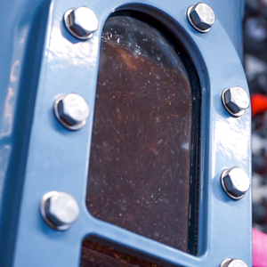

Установка деминерализатора ФСД для деминерализованной воды
Установка деминерализатора ФСД используется для тонкой полировки в высокотехнологичных процесах, например медицинская и электронная промышленность, больницы, электростанции.
Обработка деминерализованной воды с низким содержанием углекислоты приводит к снижению электропроводности менее 0,1 мкСм/см. при 10°С. Установка смешанного ионообмена доступна в 6 стандартных модулях с производительностью до 50 м3/ч.
Особенности установки деминерализатора ФСД
Антикоррозийные корпуса
Корпуса фильтров изготовлены из стали и поэтому менее чувствительны к перепадам давления. Емкости покрыты полиэтиленом. Таким образом, фильтра сочетают в себе прочность стали с сильными антикоррозионными свойствами синтетического материала.
Управление
Стандартное управление PLC с использованием 7-дюймового сенсорного экрана в качестве HMI. Модульная стандартная программа с различными конфигурациями управления, например, контроль по качеству, контроль по объему или контроль по таймеру. Изменения, специфичные для клиента, могут быть выполнены без программиста. Полностью документированная инструкция и шкаф блока питания.
Автоматическая регенерация
Регенерация начинается с разделения двух слоев ионообменников. Затем следует регенерация соляной кислотой и гидроксидом натрия. После различных промывок два ионообменных слоя снова смешиваются с помощью сжатого воздуха.

Индивидуально
Непрерывная работа
Для непрерывной работы установки деминерализатора ФСД могут быть установлены последовательно по две (дуплекс) или по три (триплекс) емкости. Установки контролируются таким образом, что одна из установок всегда работает. Когда производительность исчерпана, установка регенерируется и переводится в режим ожидания, в то время как другая установка находится в эксплуатации. Дуплексные и триплексные установки доступны на раме.
Свяжитесь с нами для получения более подробной информации
Сверхчистая вода для паровой турбины
На заводе по переработке отходов в энергию решение по очистке воды состоит из нескольких установок деминерализации, основанных на технологии ионного обмена. Это обеспечивает надежную и безопасную работу даже в нестабильных условиях исходной воды.
Вода полируется в обычной установке деминерализатора ФСД, оставляя деминерализованную воду с очень низкой проводимостью.
See references with mixed bed
Отображение 3 из 17 Референции
.jpg)
40-футовая установка обратного осмоса в контейнере
Котловая водаМобильная очистка водыТехнологическая водаХимическая промышленность
DI промывочная вода для производства высококачественной аудиопродукции
Промывная водаЭлектронная промышленностьПромышленность по обработки поверхностей
Вода для паровых турбин электростанции Киндби
Котловая водаВода для централизованного теплоснабженияТеплоэлектростанции
.jpg)
Водоподготовка для стекольного завода Туркменистана
Котловая водаОхлаждающая водаПитьевая водаПромывная водаСтекольная промышленность
.jpg)
Короткие сроки поставки раствора подпиточной воды паровых котлов высокого д...
Котловая водаТехнологическая водаПищевая промышленностьТеплоэлектростанции
Не содержащая химикатов подпиточная вода для электростанции
Котловая водаВода для централизованного теплоснабженияТеплоэлектростанции
.jpg)
Подпиточная вода для парового котла высокого давления 2 x 30 м³/ч
Котловая водаВода для централизованного теплоснабженияТеплоэлектростанции
.jpg)
.jpg)
Сверхчистая вода с меньшими эксплуатационными расходами
Котловая водаВода для централизованного теплоснабженияЦентрализованное отоплениеТеплоэлектростанции
Получите оптимальное решение
Выбор установки зависит от области применения, качества и расхода воды. Мы к Вашим услугам найти оптимальное решение на основе нашего ноу-хау. Заполните форму, и мы свяжемся с Вами.